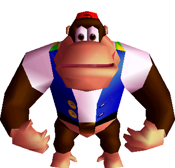

Front End Developer Website

Welkom bij Monkey Business: Kennis

In de afgelopen drie periodes heb ik een aantal programmeertalen geleerd, waaronder HTML, CSS, JavaScript en PHP.
HTML en CSS beheers ik redelijk goed, maar soms loop ik nog wel eens tegen wat uitdagingen aan.
JavaScript vind ik behoorlijk lastig, maar ik werk er hard aan en begin langzaam maar zeker meer inzicht te krijgen.
PHP ervaar ik als redelijk, omdat het tegelijkertijd zowel moeilijk als makkelijk kan zijn.